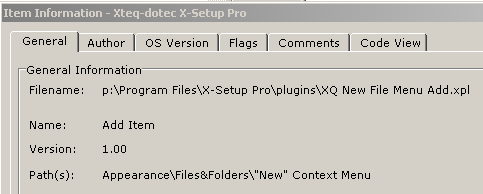
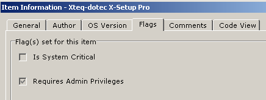

november 2006
Data Acquisition


"FILE"="Xteq Systems X-Setup Plugin 5.0"
"TYPE"="6"
"COUNT"="1"
"UIPATH"="Appearance\Files&Folders\"New" Context Menu"
"NAME"="Enable "New" Context Menu"
"LANGUAGE"="VBScript"
"TEXT 1"="Enable "New" Context Menu"
"DESCRIPTION 1"="When you right-click an empty space in Windows Explorer or on the Desktop, you'll see a sub-menu called 'New' which lets you create a new document in that folder."
"DESCRIPTION 2"="If you wish to disable this menu, you can clear the tick in the box. To re-enable it, add a tick in the box."
"DESCRIPTION 3"="NOTE: Disabling the New menu requires Windows 98/2000/Me/XP or Windows 95 with the Windows Desktop Update installed."
"COMMENT 1"="Tip found on WinGuides.com Registry Guide."
"VERSION"="1.01"
"AUTHOR"="Xteq Systems (Neil R. Turner)"
"COPYRIGHT"="Copyright © Xteq Systems - All Rights Reserved"
'Declaration of some constants
sP="HKCR\Directory\Background\shellex\ContextMenuHandlers\New\@"
'Called when the Plugin is started
SUB Plugin_Initialize
s=RegReadValue(sP)
if s="{D969A300-E7FF-11d0-A93B-00A0C90F2719}" then
Call SetUIElement(1,true)
end if
END SUB
'Called when the Plugin should validate the Data the user has entered
SUB Plugin_CheckData(ElementIndex)
END SUB
'Called when the Plugin should apply the changes
SUB Plugin_Apply(ElementIndex,ElementSubIndex)
s=GetUIElement(1)
if s=true then
Call RegWriteValue(sP,"{D969A300-E7FF-11d0-A93B-00A0C90F2719}",1)
else
Call RegWriteValue(sP,"",1)
end if
END SUB
'Called when the Plugin is about to be removed from memory
SUB Plugin_Terminate
END SUB